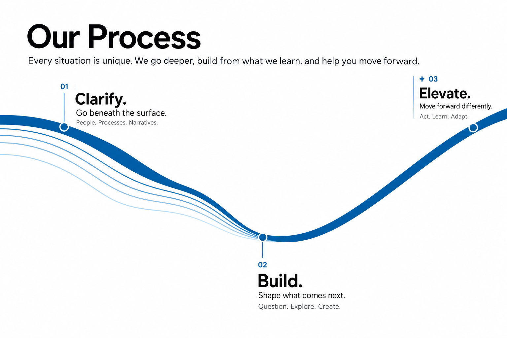

What We Do
We believe the decisions you make should reflect what you stand for, especially when they’re difficult. Our work takes shape through Organizational Partnership, Leadership Partnership, and Student Concierge.
Organizational Partnership
You may be facing a change in direction, a recurring problem no one has resolved, or a gap in senior leadership. We help you look beneath the symptoms and decide what the situation calls for.
- Organizational change: Examine the responsibilities, processes, and assumptions behind the issue. Work out what needs to change and how to carry it through.
- Culture and working relationships: Understand where expectations and daily behavior differ. Address difficult questions about accountability, roles, or whether someone is in the right position.
- Interim senior leadership: Keep essential work moving, support sound decisions, and prepare for the permanent leader.
The aim is a sound basis for your decisions and a practical way to act on them, with care for the people affected. We stay involved to help you assess what’s changing and what still needs attention.
Experience behind the work
Steve has served as Dean of Students and Interim Vice President and Chief Student Affairs Officer. His responsibilities have included staff supervision, budgets, and changes in divisional responsibilities. Matt brings experience helping institutional leaders interpret cultural shifts and consider their response.
Leadership Partnership
Some decisions are difficult to work through with the people around you. Whether you’re new to leadership or have led for years, individual coaching gives you room to examine your approach with someone who will listen carefully and question you honestly.
- Work with what’s happening: Bring a decision, a difficult relationship, or a question about your role. Together, we examine the assumptions and patterns influencing your response.
- Understand where you are now: We select assessment instruments suited to your situation and goals. The findings help us identify strengths to build on and patterns that deserve a closer look.
- Put it into practice: Prepare for a conversation or try a different approach. We return to what happened, what you learned, and what to adjust.
The work connects what you stand for to how you lead each day. You retain ownership of your decisions; we bring perspective, candid feedback, and support as you follow through.
Experience behind the work
Our experience includes years of one-to-one advising with students and leaders, leadership retreats, and supervision of professional staff. Steve brings experience in executive leadership; Matt helps people connect complex information with the wider cultural context.
Student Concierge New
Our newest service grew from students and families asking for help navigating what can be one of the most stressful periods in their lives. Student Concierge offers individual guidance before, during, and after college, with the student’s goals at the center.
- Before college: Consider college fit, academic interests, expectations, and readiness for greater independence.
- During college: Work through decisions about a major, transfer, academic progress, or where to turn for campus support.
- After college: Connect interests and experience to possible directions for work, further study, or a change of course.
We establish the student’s goals and agree together on the family’s role, communication, and privacy.
Experience behind the work
Steve brings 25 years in higher education, including service as Dean of Students. Both Steve and Matt have advised students and leaders through individual conversations and leadership retreats; Matt’s experience also includes supporting residents and mentoring resident assistants.

Our Process
Every situation is unique. We go deeper, build from what we learn, and help you move forward.
Clarify.
Go beneath the surface.
People. Processes. Narratives.Build.
Shape what comes next.
Question. Explore. Create.Elevate.
Move forward differently.
Act. Learn. Adapt.Our combined experience
advising & leading1
conversations2
is you.
1 Combined: 20 years each of advising, mentoring, and leadership, including retreats, individual meetings, staff supervision, leadership councils, and community conversations.
2 Rounded combined estimate of mentoring conversations with students and leaders, residents, professional staff, institutional leaders, and community members, individually and in groups. Includes repeat conversations with the same people; not a count of unique individuals served.